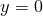
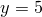

As in Gnuplot, bar charts and histograms can be produced using the boxes plot style:
plot 'data.dat' with boxes
Horizontally, the interfaces between the bars are, by default, at the midpoints along the  -axis between the specified data points (see, for example, Figure 4.1a). Alternatively, the widths of the bars may be set using the set boxwidth command. In this case, all of the bars will be centred upon their specified -co-ordinates, and have total widths equalling that specified in the set boxwidth command. Consequently, there may be gaps between them, or they may overlap, as seen in Figure 4.1(b).
-axis between the specified data points (see, for example, Figure 4.1a). Alternatively, the widths of the bars may be set using the set boxwidth command. In this case, all of the bars will be centred upon their specified -co-ordinates, and have total widths equalling that specified in the set boxwidth command. Consequently, there may be gaps between them, or they may overlap, as seen in Figure 4.1(b).
Having set a fixed box width, the default behaviour of scaling box widths automatically may be restored either with the unset boxwidth command, or by setting the boxwidth to a negative width.
As a third alternative, it is also possible to specify different widths for each bar manually, in an additional column of the input data file. To achieve this behaviour, the wboxes plot style should be used:
plot 'data.dat' using 1:2:3 with wboxes
This plot style expects three columns of data to be provided: the - and  -co-ordinates of each bar in the first two, and the width of the bars in the third. Figure 4.1(c) shows an example of this plot style in use.
-co-ordinates of each bar in the first two, and the width of the bars in the third. Figure 4.1(c) shows an example of this plot style in use.
By default, the bars originate from the line , as is normal for a histogram. However, should it be desired for the bars to start from a different vertical point, this may be achieved by using the set boxfrom command, for example:
set boxfrom 5
In this case, all of the bars would now originate from the line . Figure 4.2(1) shows the kind of effect that is achieved; for comparison, Figure 4.2(b) shows the same bar chart with the boxes starting from their default position of .
The bars may be filled using the with fillcolour modifier, followed by the name of a colour:
plot 'data.dat' with boxes fillcolour blue plot 'data.dat' with boxes fc 4
Figures 4.1(b) and (d) demonstrate the use of filled bars.
Finally, the impulses plot style, as in Gnuplot, produces bars of zero width; see Figure 4.2(c) for an example.